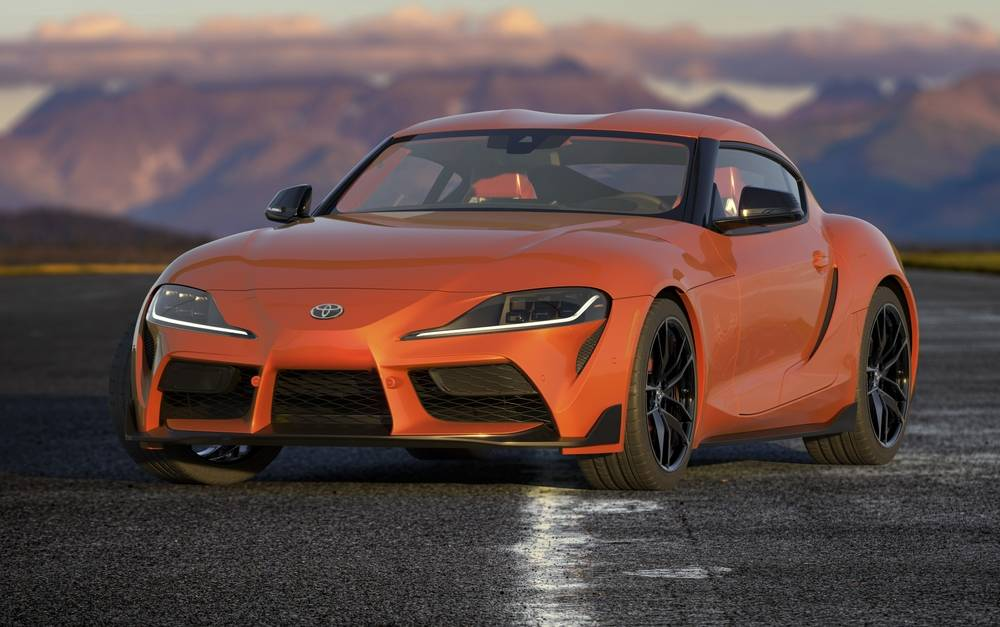

WR155
Yamaha WR155R adalah motor trail (off-road) dengan mesin 155cc berpendingin cairan dan VVA yang memberikan performa kuat, cocok untuk petualangan di berbagai medan
Rp 38.660.000

Beat Karbu
Honda Beat Karbu adalah generasi pertama skuter matik Honda Beat yang diluncurkan pada tahun 2008 dan menggunakan sistem pembakaran karburator. Motor ini dikenal dengan kemudahan perawatan, konsumsi bahan bakar yang irit (sekitar 40 km/liter), dan kesederhanaannya, membuatnya menjadi favorit di pasaran motor bekas saat ini.
Rp 10.000.000

Toyota Supra
Toyota Supra adalah mobil sport (sports car) berperforma tinggi dari Toyota yang dikenal sebagai 2-seater coupe dengan penggerak roda belakang. Model terbarunya, yaitu Toyota GR Supra, ditenagai oleh mesin 6 silinder segaris turbo berkapasitas 2.998 cc dan tersedia dalam opsi transmisi otomatis. Supra memiliki sejarah panjang, mulai dari generasi pertamanya yang dirilis pada tahun 1978 hingga generasi saat ini yang dilanjutkan dengan nama GR Supra..
Rp 1,5M